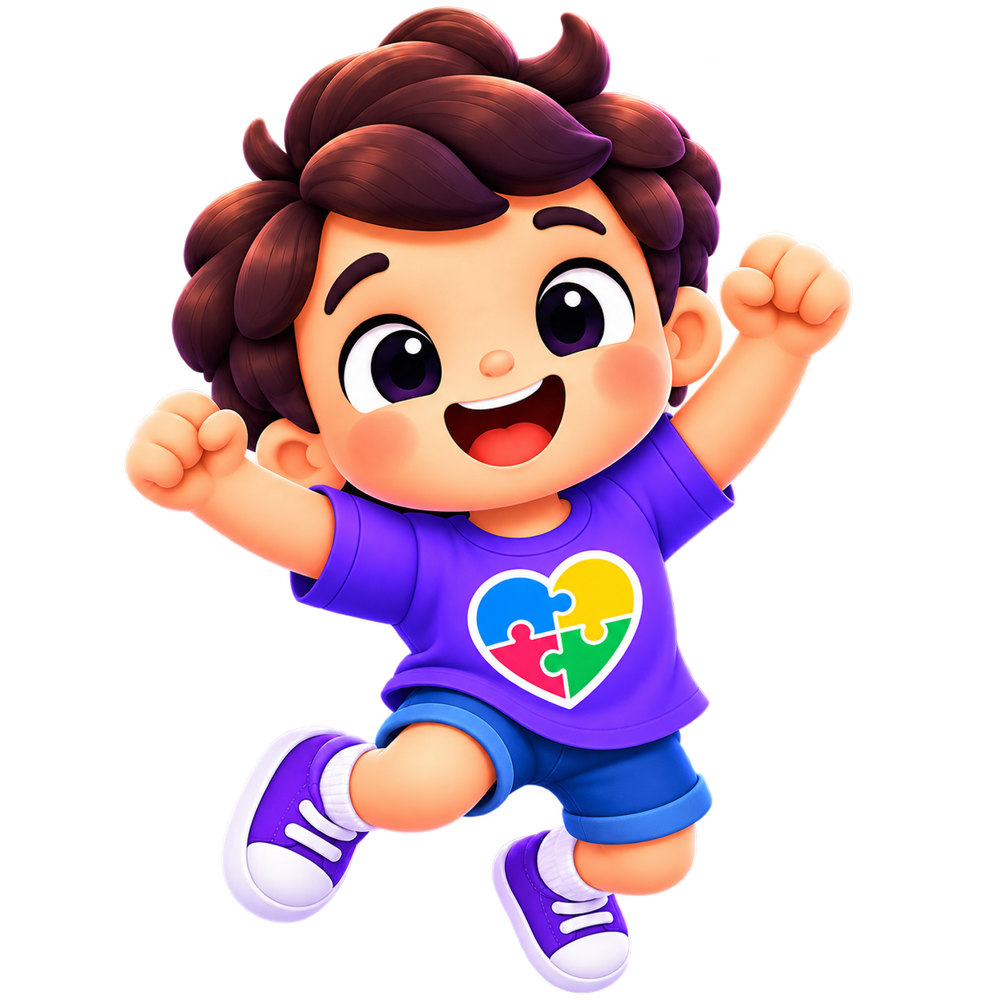

PERFIS
Aluno atual
👤
AlunoMeta: aprendizagem geral
Preferências
ÁREA PROFISSIONAL
Painel do professor
Acompanhe cada aluno, identifique habilidades consolidadas, dificuldades e intervenções sugeridas.
RELATÓRIO PEDAGÓGICO INDIVIDUAL
Aluno
Mapa de habilidades
Dominada ≥ 85%; Em desenvolvimento 60–84%; Precisa de apoio < 60%.
Categorias com maior dificuldade
Recomendações de intervenção
Realize algumas atividades.
Histórico de desempenho
Últimas respostas registradas
Trilha personalizada / Favoritos
Diagnóstico inicial
Ainda não realizado.
1
Identificação do acompanhamento
Informe o período e o responsável pelo registro.
2
Planejamento individual
Defina objetivos e prioridades para o próximo período.
3
Registro do professor
Descreva estratégias, avanços, apoios necessários e aspectos relevantes do acompanhamento.
4
Intervenções pedagógicas
Use as sugestões automáticas como ponto de partida e personalize conforme o contexto do aluno.
CONCLUSÃO AUTOMÁTICA
Texto para registro pedagógico
Gere uma síntese a partir do diagnóstico, desempenho, metas, habilidades e observações registradas.
Registro recente
| Data | Categoria | Nível | Bloco | Resultado |
|---|
CONTEÚDO
Escolha uma categoria
ALFABETIZAÇÃO
Rimas
200 atividades em 4 blocos de 50

Vamos aprender juntos!
🎵
PAINEL DE PROGRESSO
Desempenho do aluno
| Categoria | Respondidas | Acertos | % |
|---|